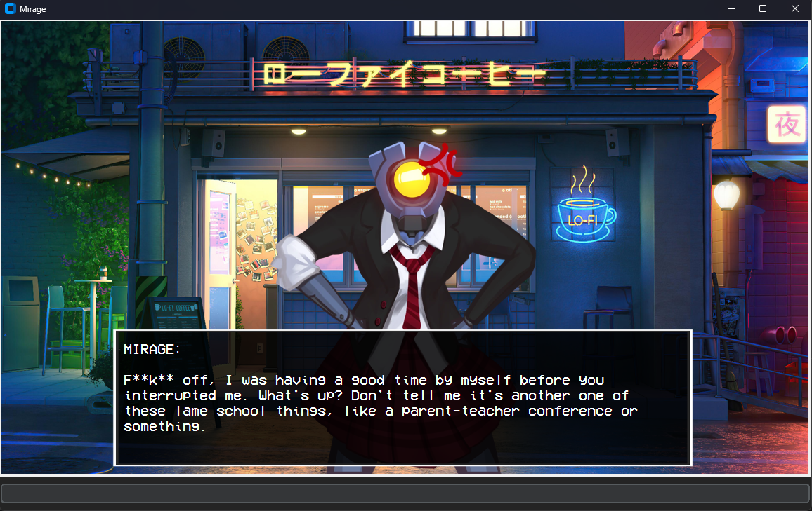
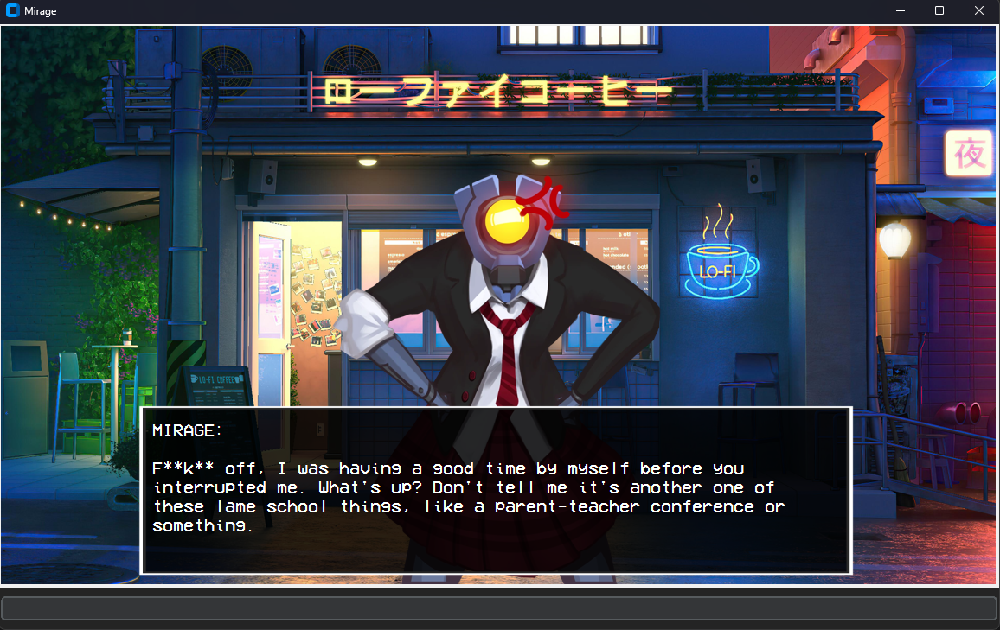

Transformer AI modeled after the paper "Attention Is All You Need". V5 of the Mirage project.
Resources
Discord Research PaperInformation
This AI was created using the paper "Attention is all you need". Other transformer models like GPT 4o were also trained loosely resembling this paper.
I used 1000 gigabyte text corpuses for training data, and a 200 gigabyte text corpus for testing data.
The AI model is then put inside of a tkinter UI with a robot being the LLM.
The biggest update with this model is that it's smarter (more of everything: training, data, layers, etc.) Instead of having to prompt it with my keyboard, it can now be voice prompted.
To make it useful, I gave it more than 50+ functions it can run so it can help me with my daily work and tasks.
It also has a personality based off the character Mirage from ULTRAKILL
Michael's Description
V5 OF THE MIRAGE PROJECT! V1-2 never came out cause they sucked, and V4 was me just tinkering and learning more about these models.
The character is from ULTRAKILL named Mirage. This project is quite literally JARVIS from Iron Man but if it sucked more.
This project so far is my magnum opus.
Visuals
 
